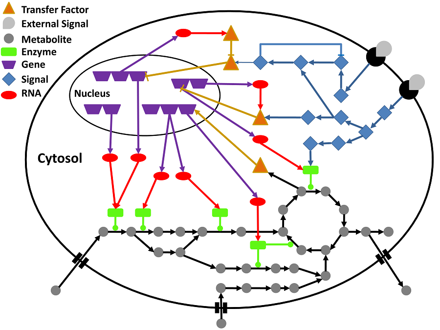

Hybrid Approaches: Definitions
Although we have presented three types of analysis for GEM models
(Topological, Constraint-based, and Kinetic Modeling), it is
rational to consider their limitations and flaws. Like all other
types of modeling, it is not possible to cover all features of
biological networks in each mentioned approaches. Hence, different
hybrid methods have been emerged to progress analysis processes.
(Tenazinha, N. and S. Vinga, IEEE/ACM Trans Comput Biol Bioinform, 2011, 8(4), 943-58)
Here we have described hybrid methods in two different views:
Integration of omics data
Beginning of high throughput technologies has provided possibility to high content screening
and high content analysis of cells so that it has become a chief and crucial tool in gaining a
better understanding of cell function, disease study and drug discovery over the past few decades.
Besides, their development has been accelerated in the post-genomic era since technologies such as
DNA sequencing has evolved intensely and nowadays this technology has become easier and highly
faster due to the development of dye-based sequencing methods with automated analysis [1,2].
As a result, biological research has been enhanced and the number of sequenced genomes belonging
to several organisms intensively grows up annually [3]. Afterward, global methods were developed
to reconstruct networks based on direct sequencing and expression array approaches which measures
changes in gene expression on genome-wide basis or at the RNA level, upon mutation or in response
to environmental changes. Emerging ChIp assays (Chromatin Immunoprecipitation) analyzing genome-wide
location of mammalian transcription factors and ChIP-on-chip technologies Combining ChIP assays with
DNA microarray, ChIP-sequencing have provided complex and detailed information about transcriptional
networks [4]. Two distinct powerful proteomic technologies; Yeast two-hybrid systems and Mass Spectrometry
(MS) technologies give straight evidence to protein-protein and protein-DNA interactions in cells and
recognize proteins that co-affinity purify (co-AP) with a bait protein [5,6].
In general, these high throughput technologies have provided a framework for understanding observations
at the cell, phenotypic, or physiological level. They are also helping us to unravel the complex
relationships between genes, gene products, and cellular and biological functions, to develop novel
therapeutic, diagnostic, and prognostic agents. Whereas high-throughput omics approaches to analyze
molecules at various cellular levels are rapidly becoming available, it is also going to be clear that
any single omics approaches might not be adequate to illustrate the complexity of biological systems (Figure 1) [7].

Figure 1:
schematic overview of the interconnection between signaling, gene
regulation and metabolism.
In a cell, signaling networks are
activated by external signals (grey shapes) binding to a receptor
(black semi-circles) located in the cell membrane.
Then the signal
is spread in the cell internally using of e.g. protein
phosphorylation cascades (blue diamonds). The cascades might cause
changes in the expression of genes through activating or inhibiting
transcription factors (orange triangles). Gene regulatory networks
control the transcriptional level of genes (purple trapeziums), and
hence the production of messenger RNA molecules (red ovals), which
are consequently translated into proteins (green rectangulars).
The
proteins are intricate in cellular functions, containing signal
transduction and the catalysis of metabolic reactions.
Particular
metabolites (grey circles) are known to affect proteins’ activity
(e.g. binding to the allosteric site) and could also influence gene
regulation.
As demonstrated in the figure, signaling, gene
regulation and metabolism are strongly interconnected relying to the
systems’ behavior could just be precisely understood by integrating
the sub-systems appropriately. The interactions among the molecules
are shown by edges: arrow shaped edges depict activating
interactions; blunt edges show inhibitory interactions; and edges
with a circle illustrate enzyme reaction catalysis
(E
Goncalves et al.,
Molecular BioSystems, 2013, 9, 1576-1583)
Integrated multi-omics approaches have been used recently and the studies have allowed scientists to unravel global regulatory mechanisms and complex metabolic networks in different eukaryotic organisms [8-11]. Although integrative analysis of multiple large-scale omics datasets could be applied to produce new knowledge which is not accessible by analysis of a single data type alone, more studies still needs to be performed in order to improve computational approaches and experimental protocols. So, these primary studies have obviously confirmed that integrated omics analysis might be a key to interpret complex biological systems. Some of the progress and challenges associated with integrated omics studies have been reviewed previously in several excellent articles [12-14]. To have a more accurate look at the cell biology, it has recommended to integer omic data (e.g. genome sequence, transcriptome, proteome and metabolome) and gain a global insight into cellular behavior because it results from the action and interplay between the distinct networks in a complex web of hierarchical, multi-leveled, regulated dynamic processes [13]. Integrating genomics, transcriptomics and proteomics knowledge has allowed the assessment of the regulation, activities, and interactions of proteins in response to internal and external stimuli.
Integration of modeling methods
Ordinary differential equations (ODEs) describing the fundamental
biochemistry are comprehensive and have high explanatory power [16].
Nevertheless, their applicability is restricted because of the
difficulty to gain the necessary model parameters. They also have
restricted scalability, and hence they are not applicable to
genome-scale models and simulations.
Less detailed approaches such as constraint-based models have been
considered in larger networks. Selecting the proper modeling
formalism is a trade-off between detail and complexity.
Building an integrated model that accounts for interactions from all
levels could be realized by writing down the original biochemical
reactions and converting them into ODEs; such a method has been
already considered to build models in each level separately.
The integration of the various levels into ODE models would be very
challenging computationally because of leading to stiff ODEs [17].
These problems might become tractable by suitable numerical methods.
However, building models of larger integrated networks requires a
level of information that is very rarely available, even for a
single level. Therefore, it is not expected that fully systematic
ODE models integrating all levels will be developed in the near
future.
For qualitative modeling, strategies have been developed based on
the different types of large-scale networks, although their
integration is not straightforward.
The lack of integrated models might be the absence of knowledge
about the molecular interfaces between the levels, and the lack of
appropriate data at both levels simultaneously. Furthermore,
different time scales need to be considered for each level, which is
often difficult in qualitative models.
Structural Kinetic Modeling (SKM) is another hybrid approach which
seeks to provide a bridge between stoichiometric analysis and
explicit kinetic models of metabolism and represents an intermediate
step on the way from topological analysis to detailed kinetic models
of metabolic pathways. Specifically, SKM aims to give a quantitative
account of the possible dynamics of a metabolic network.
To summarize, currently no single mathematical formalism seems
having capability of simulating the phenotype of a cell by
consideration of signaling, gene regulation and metabolic systems at
the same time. Figure 2 represents a summary of modeling approaches
which have been performed in three biological levels.
(E
Goncalves et al.,
Molecular BioSystems, 2013, 9, 1576-1583)
References in the figure: Karr et al. [18],
Konig et al. [19], Mosca et al. [20], Stelniec-Koltz et al. [21], Nakakuki et al. [22].
Recommended readings for Integrated Methods and Analysis of GEM Models:
-
Paper: Integrative Analysis of Metabolic Models – from Structure to Dynamics (Link)
|
References: 1. Pettersson E, Lundeberg J, Ahmadian A (2009) Generations of sequencing technologies. Genomics 93: 105-111. 2. Olsvik O, Wahlberg J, Petterson B, Uhlen M, Popovic T, et al. (1993) Use of automated sequencing of polymerase chain reaction-generated amplicons to identify three types of cholera toxin subunit B in Vibrio cholerae O1 strains. J Clin Microbiol 31: 22-25. 3. Bernal A, Ear U, Kyrpides N (2001) Genomes OnLine Database (GOLD): a monitor of genome projects world-wide. Nucleic Acids Res 29: 126-127. 4. Ren B, Dynlacht BD (2004) Use of chromatin immunoprecipitation assays in genome-wide location analysis of mammalian transcription factors. Methods Enzymol 376: 304-315. 5. Young KH (1998) Yeast two-hybrid: so many interactions, (in) so little time. Biol Reprod 58: 302-311. 6. Pandey A, Mann M (2000) Proteomics to study genes and genomes. Nature 405: 837-846. 7. Gygi SP, Rochon Y, Franza BR, Aebersold R (1999) Correlation between protein and mRNA abundance in yeast. Molecular and cellular biology 19: 1720-1730. 8. Hegde PS, White IR, Debouck C (2003) Interplay of transcriptomics and proteomics. Curr Opin Biotechnol 14: 647-651. 9. Mootha VK, Lepage P, Miller K, Bunkenborg J, Reich M, et al. (2003) Identification of a gene causing human cytochrome c oxidase deficiency by integrative genomics. Proc Natl Acad Sci U S A 100: 605-610. 10. Mootha VK, Bunkenborg J, Olsen JV, Hjerrild M, Wisniewski JR, et al. (2003) Integrated analysis of protein composition, tissue diversity, and gene regulation in mouse mitochondria. Cell 115: 629-640. 11. Alter O, Golub G (2004) Integrative analysis of genome-scale data by using pseudoinverse projection predicts novel correlation between DNA replication and RNA transcription. Proceedings of the National Academy of Sciences of the United States of America 101: 16577-16582. 12. Joyce A, Palsson B (2006) The model organism as a system: integrating 'omics' data sets. Nature Reviews Molecular Cell Biology 7: 198-210. 13. De Keersmaecker SC, Thijs IM, Vanderleyden J, Marchal K (2006) Integration of omics data: how well does it work for bacteria? Mol Microbiol 62: 1239-1250. 14. Steinfath M, Repsilber D, Scholz M, Walther D, Selbig J (2007) Integrated data analysis for genome-wide research. EXS 97: 309-329. 15. Goncalves E, Bucher J, Ryll A, Niklas J, Mauch K, et al. (2013) Bridging the layers: towards integration of signal transduction, regulation and metabolism into mathematical models. Molecular BioSystems 9: 1576-1583. 16. Tenenbaum M, Pollard H (1963) Ordinary Differential Equations: An Elementary Textbook for Students of Mathematics, Engineering, and the Sciences: Harper and Row. 17. Hairer E, Nørsett S, Wanner G (2009) Solving Ordinary Differential Equations I: Nonstiff Problems (Springer Series in Computational Mathematics) (v. 1): Springer. 18. Karr JR, Sanghvi JC, Macklin DN, Gutschow MV, Jacobs JM, et al. (2012) A whole-cell computational model predicts phenotype from genotype. Cell 150: 389-401. 19. Konig M, Bulik S, Holzhutter HG (2012) Quantifying the contribution of the liver to glucose homeostasis: a detailed kinetic model of human hepatic glucose metabolism. PLoS Comput Biol 8: e1002577. 20. Mosca E, Alfieri R, Maj C, Bevilacqua A, Canti G, et al. (2012) Computational modeling of the metabolic States regulated by the kinase akt. Front Physiol 3: 418. 21. Stelniec-Klotz I, Legewie S, Tchernitsa O, Witzel F, Klinger B, et al. (2012) Reverse engineering a hierarchical regulatory network downstream of oncogenic KRAS. Mol Syst Biol 8: 601. 22. Nakakuki T, Birtwistle MR, Saeki Y, Yumoto N, Ide K, et al. (2010) Ligand-specific c-Fos expression emerges from the spatiotemporal control of ErbB network dynamics. Cell 141: 884-896. |